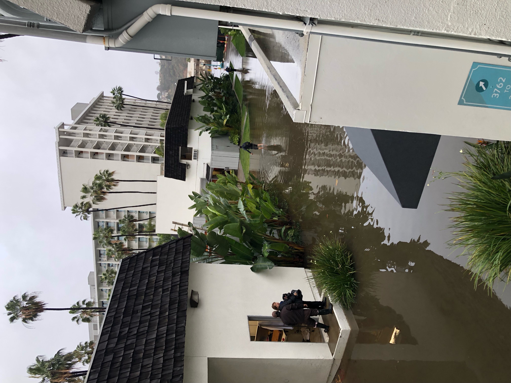

CDDRC Presents at the Plant and Animal Genomes Conference in San Diego
Alistair Ward & Carson Holt, 19 January 2023
Carson Holt moderated a session at the recent Plant and Animal Genome Conference (PAG30) in San Diego focused on “Next generation genome annotation and analysis”. As part of this session, Alistair Ward gave a presentation on CDDRC, highlighting the power of the multi-omics data for cardiovascular research and the Mosaic visual genomics platform that is being extended to make this data accessible to the community of researchers.
The conference occured during California's recent deluge of rain and stormy weather. So much rain fell that Carson was forced to wade through knee deep water to get from his hotel to the conference meeting rooms!
Figure 1.View of the rising waters at PAG.